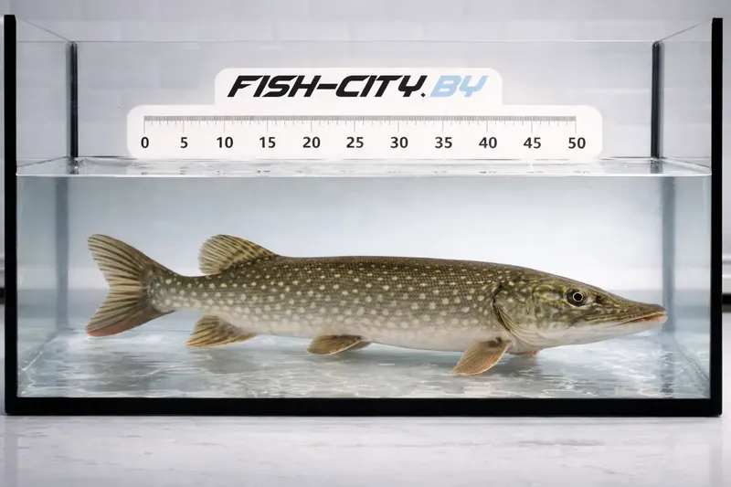

Живая рыба
Щука живая 200-300 г, РБ
Цена и наличие
- 200-300 г15 BYN / шт.В наличии
Данные на 23.11.2026.
Характеристики
- Размерный ряд
- 200-300 г
- Вид разделки
- непотрошеный
- Производитель
- РБ
Описание
Щука, величественная и загадочная обитательница водных просторов, вызывает восхищение своей изысканной красотой и характером.
ОСНОВНОЕ
В вес 200-300 г входят одна/две рыбы. Также, вместо живой/свежей рыбы, можно приобрести мальков щуки в пруд. Пищевая ценность на 100 г продукта белки – 18.4 г, жиры – 0.8 г, углеводы – 0 г Энергетическая ценность на 100 г продукта 82 ккал Тип питания низкокалорийный продукт, экологичный продукт Упаковка размерный ряд рыбы от 200 до 300 г Условия и срок хранения хранить не более 15 часов в пакете с кислородом с момента упаковки
ДОПОЛНИТЕЛЬНО
Живая щука весом от 200 до 300 г — небольшая пресноводная рыба белорусского происхождения. Такой размер удобен для порционного приготовления: рыбу можно запекать или жарить целиком, готовить на гриле, использовать для ухи и других домашних рыбных блюд. Мясо щуки плотное, нежирное, с характерным вкусом пресноводной рыбы. Оно хорошо сочетается с луком, овощами, зеленью, сметанными и сливочными соусами. Небольшие экземпляры особенно удобно готовить целиком — после очистки и подготовки рыба быстро пропекается и подходит для индивидуальной подачи. Щуку можно жарить на сковороде, запекать в духовке с овощами и специями, тушить, готовить на мангале или использовать для приготовления насыщенной рыбной ухи. При необходимости несколько небольших рыб можно приготовить одновременно для семьи или компании. В продаже — живая щука весом 200–300 г, Республика Беларусь. Продажа рыбы в живом виде позволяет получить свежий продукт непосредственно перед разделкой и приготовлением. Фактический вес каждой рыбы может отличаться в пределах заявленного диапазона. Заказать живую щуку 200–300 г можно для повседневного приготовления, рыбных супов или блюд на гриле. При выборе количества стоит учитывать способ приготовления и необходимое число порций.